Toms Blog: Infrastruktur-Dokumentation
1. Über dieses Dokument
Dieses Dokument beschreibt die Infrastruktur der Toms Blog-Plattform im Detail. Es ergänzt die arc42-Verteilungssicht um detaillierte Informationen zu Cluster-Setup, GitOps-Workflows, Netzwerk-Topologie und operationellen Verfahren.
Während die arc42-Dokumentation die Infrastruktur aus Architektursicht beschreibt, konzentriert sich dieses Dokument auf konkrete Konfigurationen, Betriebsverfahren und Runbooks.
1.1. Zielgruppe
-
Entwickler, die die Infrastruktur verstehen oder ändern wollen
-
Ops-Personal, das den Cluster betreibt und Incidents bearbeitet
-
Reviewer, die Infrastrukturentscheidungen nachvollziehen wollen
1.2. Konventionen
-
Diagramme werden als Mermaid-Diagramme inline in AsciiDoc erstellt
-
Anforderungsreferenzen verweisen auf Doorstop-IDs (INF-xxx, OPS-xxx, STK-xxx)
-
Jeder Bereich hat ein eigenes Kapitel
-
Konfigurationsbeispiele verwenden die tatsächlichen Werte aus dem Repository
1.3. Infrastruktur-Überblick
Die Plattform läuft auf einem Kubernetes-Cluster bei Hetzner Cloud (INF-001). Das folgende Diagramm zeigt den Gesamtaufbau:

1.4. Requirement-Abdeckung
Die Infrastruktur-Anforderungen sind in Doorstop unter dem Prefix INF (Infrastructure Requirements) und OPS (Operations Requirements) dokumentiert. Sie sind von den Stakeholder-Anforderungen STK-007 (Cloud-Native Deployment) und STK-016 (Secrets-Management) abgeleitet.
| Req-ID | Beschreibung | Kapitel |
|---|---|---|
INF-001 |
Kubernetes-Cluster auf Hetzner Cloud |
|
INF-002 |
GitOps-Deployment mit Flux |
|
INF-003 |
TLS-Terminierung mit cert-manager |
|
INF-004 |
Secrets-Management mit SOPS + age |
|
INF-005 |
PostgreSQL HA via CloudNativePG |
|
INF-006 |
Service Mesh mit Linkerd (mTLS) |
|
INF-007 |
Network Policies (Default Deny) |
|
INF-008 |
Versionierte Image-Tags |
|
INF-009 |
Backup-Strategie |
|
INF-010 |
Monitoring-Infrastruktur |
2. Kapitel
-
Cluster-Setup — Provisionierung, Nodes, Netzwerk
-
GitOps & Deployment — Flux, Image-Automation, Secrets
-
Service Mesh — Linkerd, mTLS, Authorization
-
Networking & Ingress — Traefik, TLS, Network Policies
-
Datenhaltung — CloudNativePG, Backup
-
Operations — Rollback, Disaster Recovery, Monitoring